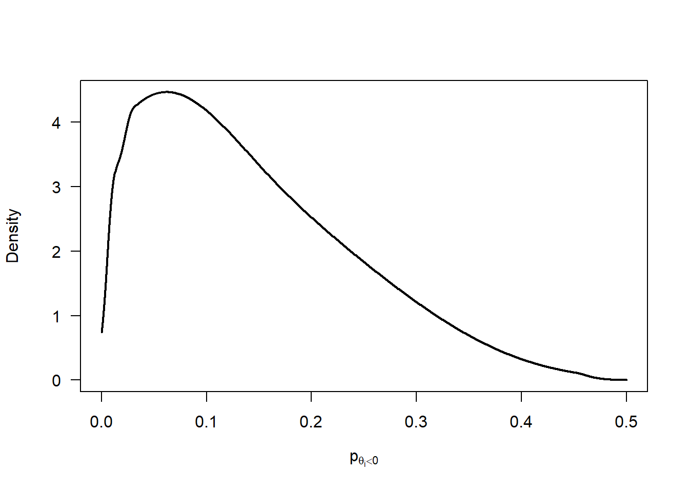
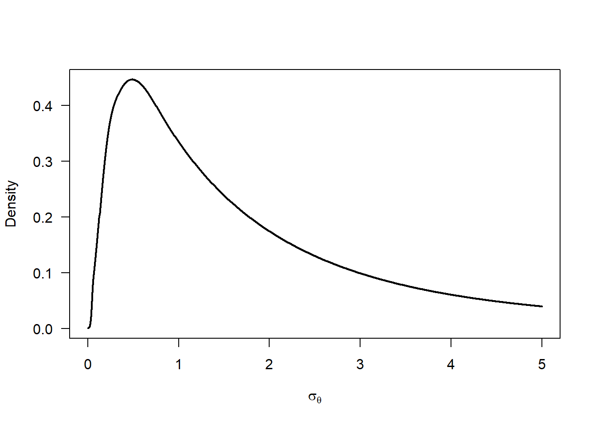
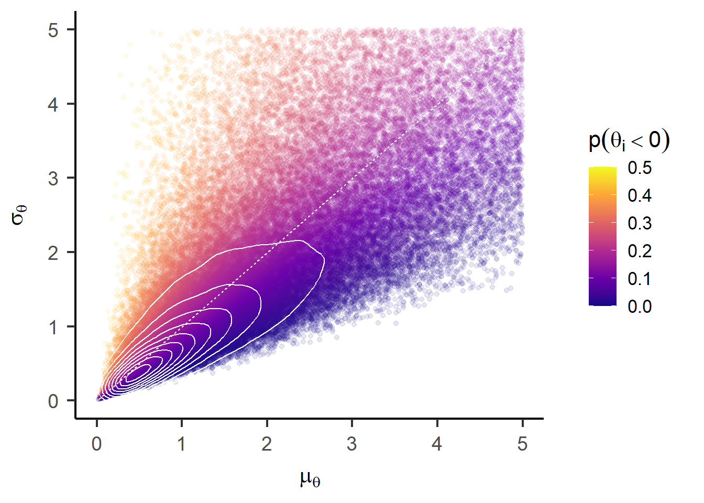
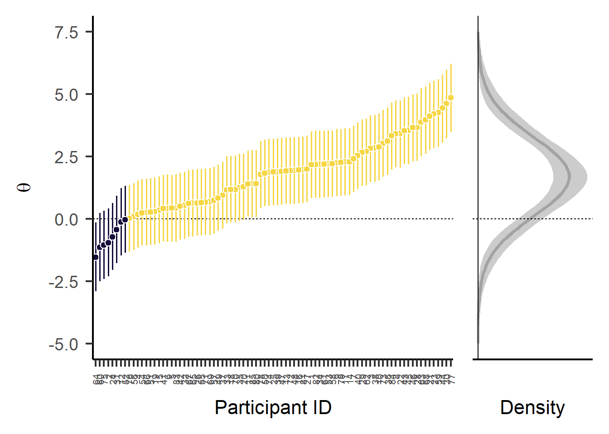
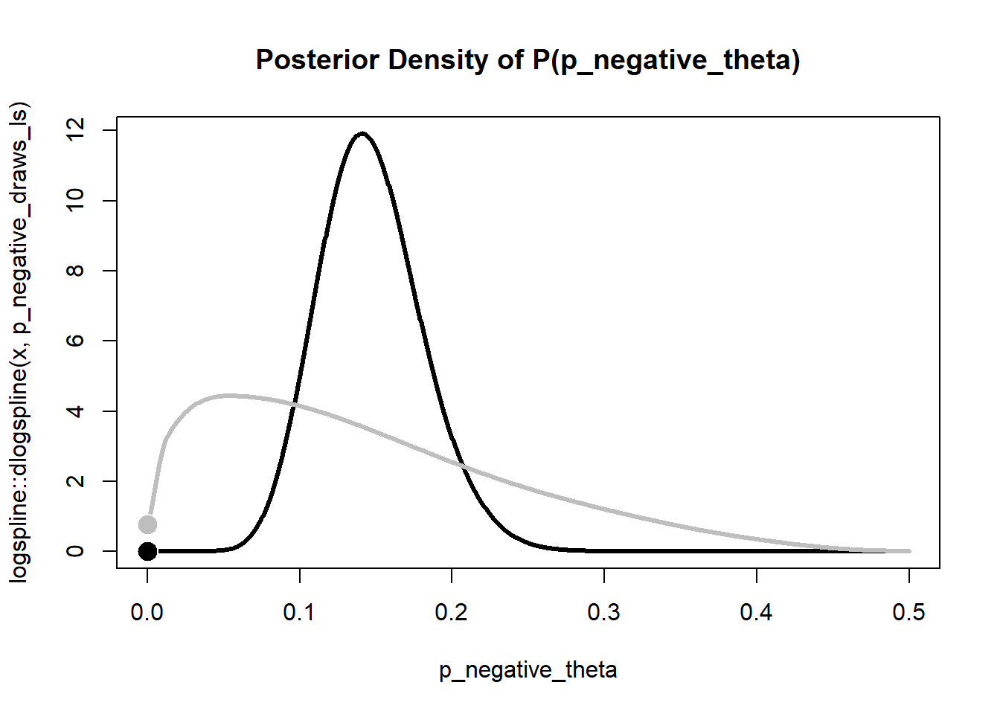
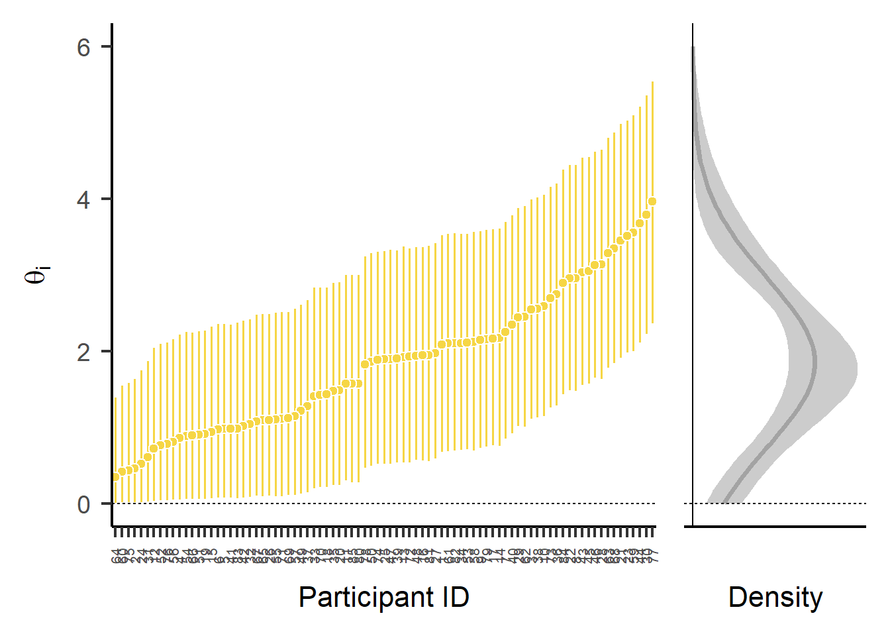
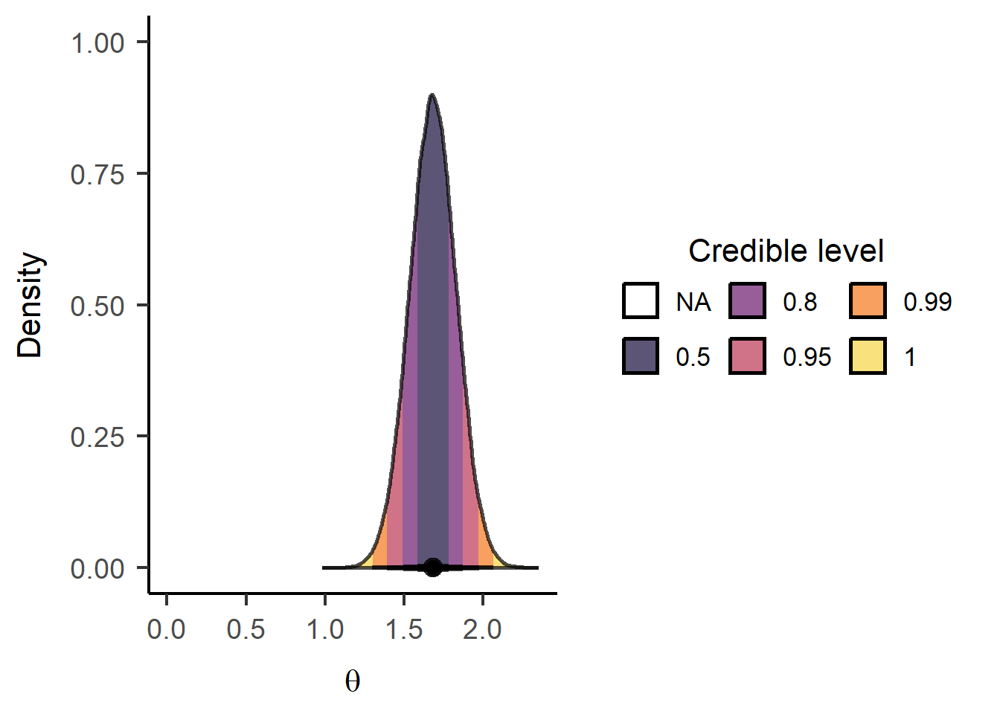
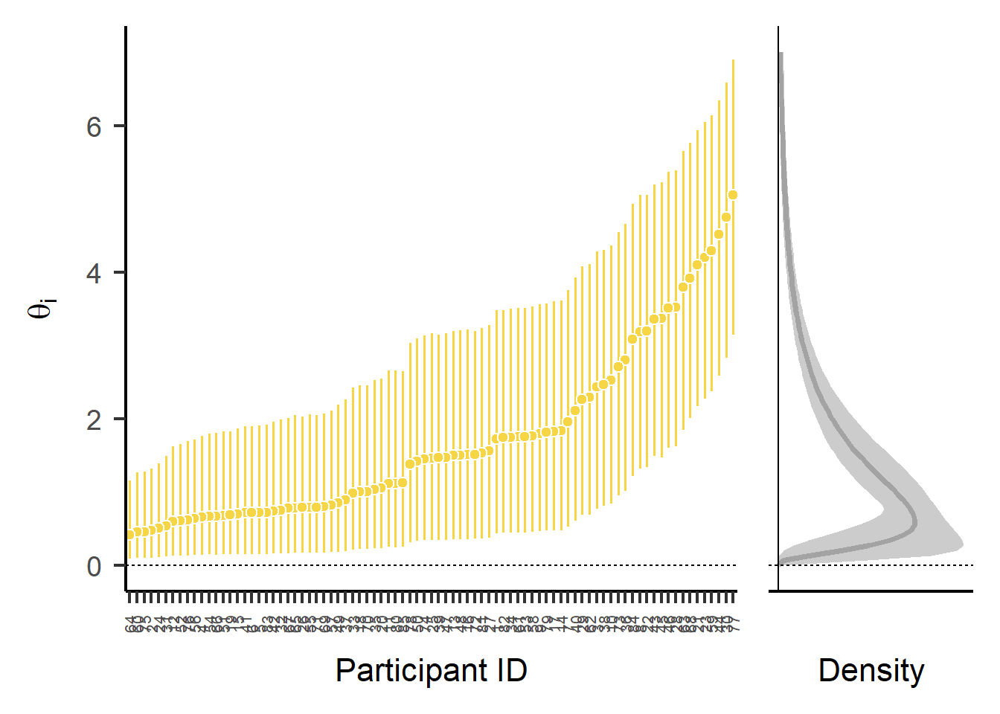
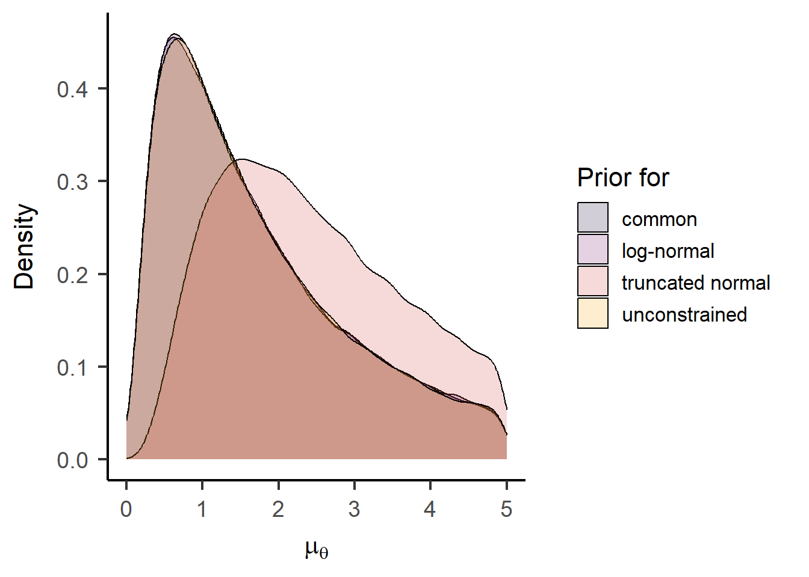
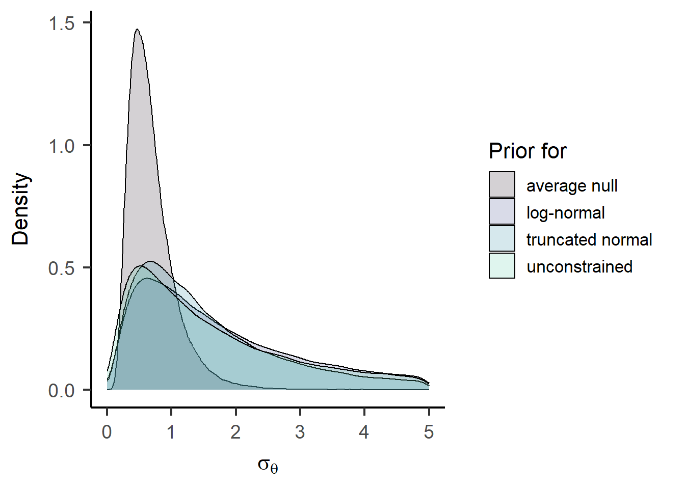

![]()
fle_data <- read.csv("./publishedMotnPostnDataToLoad/myOverallJoV_readyForQualitativeTest.csv")Inidividual Differences Investigation for Flash Lag Effect
For this analysis, we need multiple observations per participant to partition the observed variance in degrees of visual angle (dva) into true individual differences \(\sigma_\theta\) and error variance \(\sigma_\epsilon\), i.e. variance between observations within a participant. Hence, we collapse the data across the two sessions and estimate an overall mean ((Intercept), \(\mu_\theta\)) and individual differences around this mean for each participant (random effect ID, \(\sigma_\theta\)).
fle_lmer <- lmer(dva ~ 1 + (1 | ID), data = fle_data)
summary(fle_lmer)Linear mixed model fit by REML. t-tests use Satterthwaite's method [
lmerModLmerTest]
Formula: dva ~ 1 + (1 | ID)
Data: fle_data
REML criterion at convergence: 649.2
Scaled residuals:
Min 1Q Median 3Q Max
-2.8348 -0.3584 -0.0392 0.4377 3.3681
Random effects:
Groups Name Variance Std.Dev.
ID (Intercept) 2.617 1.618
Residual 1.114 1.055
Number of obs: 170, groups: ID, 85
Fixed effects:
Estimate Std. Error df t value Pr(>|t|)
(Intercept) 1.6971 0.1932 84.0000 8.782 1.63e-13 ***
---
Signif. codes: 0 '***' 0.001 '**' 0.01 '*' 0.05 '.' 0.1 ' ' 1Based on the assumption of a normal distribution of individual differences \(\theta_i \sim \mathcal{N}(\mu_\theta, \sigma_\theta)\), we can compute the proportion of participants with truely negative effects \(p(\theta_i<0)\) as follows:
\[ p(\theta_i<0) = \Phi\left(\frac{- \mu_\theta}{\sigma_\theta}\right) \]
mle_p_negative <- pnorm(
q = 0
, mean = fixef(fle_lmer)[1]
, sd = attr(VarCorr(fle_lmer)$ID, "stddev")
)
mle_p_negative[1] 0.1470737To test whether this proportion is credibly greater than zero, we will fit a Bayesian hierarchical model next.
Bayesian Hierarchical Model
Following the standard hierarchical model structure for individual differences, we define the following model:
\[ \begin{aligned} y_{ij} & \sim \mathcal{N}(\theta_i, \sigma_\epsilon) \\ \theta_i & \sim \mathcal{N}(\mu_\theta, \sigma_\theta) \\ \\ \mu_\theta & \sim \log \mathcal{N}(a_\mu, b_\mu) \\ \\ \sigma_\theta & = -\mu_\theta / \Phi^{-1}(0.5 \; p(\theta_i<0)) \\ p(\theta_i<0) & = \Phi(p^{*}_{\theta_i<0}) \\ p^{*}(\theta_i<0) & \sim \mathcal{N}(a_p, b_p) \\ \\ \sigma_\epsilon^2 & \propto 1/\sigma_\epsilon^2 \end{aligned} \]
We place a log-normal prior on the group mean \(\mu_\theta\) to ensure positive values (but we could replace this by something more flexible). We parameterize the individual differences standard deviation \(\sigma_\theta\) in terms of the proportion of individuals that show a negative flash lag effect (i.e., a flash lead effect) \(p(\theta_i<0)\) to directly estimate this quantity of interest. To improve sampling efficiency, we place a normal prior on the probit-transformed quantity \(p^{*}(\theta_i<0)\). Finally, we place a non-informative prior on the error variance \(\sigma_\epsilon^2\).
Prior distributions
p_negative_prior <- rnorm(1e5, mean = -2/3, sd = 2/3) |>
pnorm(0) |>
(\(x) x / 2)()
p_negative_prior |>
logspline::logspline(lbound = 0, ubound = 0.5) |>
(
\(fit) {
curve(
logspline::dlogspline(x, fit)
, from = 0, to = 0.5
, lwd = 2
, xlab = expression(p[theta[i] < 0])
, ylab = "Density"
, las = 1
, n = 1001
)
}
)()
curve(
dlnorm(x, meanlog = 0.5, sdlog = 1)
, from = 0, to = 5
, lwd = 2
, xlab = expression(mu[theta])
, ylab = "Density"
, las = 1
, n = 1001
)
mu_prior <- rlnorm(1e5, meanlog = 0.5, sdlog = 1)
sigma_prior <- -mu_prior / qnorm(p_negative_prior)
sigma_prior |>
logspline::logspline(lbound = 0) |>
(
\(fit) {
curve(
logspline::dlogspline(x, fit)
, from = 0, to = 5
, lwd = 2
, xlab = expression(sigma[theta])
, ylab = "Density"
, las = 1
, n = 1001
)
}
)()
unconstrained_joint_prior <- data.frame(mu = mu_prior, sigma = sigma_prior, p_negative = p_negative_prior) |>
ggplot() +
aes(x = mu, y = sigma, color = p_negative) +
geom_point(alpha = 0.1) +
stat_density_2d(color = "white", bins = 10) +
geom_abline(intercept = 0, slope = 1, color = "white", linetype = "22") +
# annotate("point", x = fixef(fle_lmer)[1], y = attr(VarCorr(fle_lmer)$ID, "stddev"), shape = 21, color = "black", fill = "white", size = 5) +
labs(
x = expression(mu[theta])
, y = expression(sigma[theta])
, color = expression(p(theta[i] < 0))
) +
scale_color_viridis_c(option = "C", limits = c(0, 0.5)) +
lims(x = c(0, 5), y = c(0, 5)) +
papaja::theme_apa(base_size = 16)
unconstrained_joint_priorWarning: Removed 17971 rows containing non-finite outside the scale range
(`stat_density2d()`).Warning: Removed 17971 rows containing missing values or values outside the scale range
(`geom_point()`).
Model estimation
pse_model <- readLines("./models/pse-unconstrained.stan") |>
paste(collapse = "\n")
fle_stan_data <- list(
N = nrow(fle_data) |> as.integer()
, n_subjects = length(unique(fle_data$ID)) |> as.integer()
, id = as.integer(as.factor(fle_data$ID))
, y = fle_data$dva
# Prior settings
, pi_mean = -2/3
, pi_sd = 2/3
, mu_theta_mean = 0.5
, mu_theta_sd = 1
)
fle_bayes <- rstan::stan(
model_code = pse_model
, data = fle_stan_data
, iter = 1e5/4 + 1000
, warmup = 1000
, chains = 4
, cores = 4
, seed = 123
)
# model diagnostics
str_post_unconstrained <- data.frame(summary(fle_bayes)$summary)
check_hmc_diagnostics(fle_bayes)
Divergences:0 of 100000 iterations ended with a divergence.
Tree depth:0 of 100000 iterations saturated the maximum tree depth of 10.
Energy:E-BFMI indicated no pathological behavior.Table 1 shows the close agreement between the posterior means of the parameter estimates to the point estimates from the (restricted) maximum likelihood estimation via lmer().
data.frame(
parameter = c("mu_theta", "sigma_theta", "sigma_epsilon", "p_negative_theta")
, bayes = fle_bayes |>
summary(pars = c("mu_theta", "sigma_theta", "sigma_epsilon", "p_negative_theta")) |>
(\(x) x$summary)() |>
as.data.frame() |>
dplyr::pull("mean")
, mle = c(
fixef(fle_lmer)[1],
attr(VarCorr(fle_lmer)$ID, "stddev"),
sigma(fle_lmer),
mle_p_negative
)
) |>
knitr::kable()| parameter | bayes | mle |
|---|---|---|
| mu_theta | 1.6978188 | 1.6971440 |
| sigma_theta | 1.6107703 | 1.6177653 |
| sigma_epsilon | 1.0621039 | 1.0554625 |
| p_negative_theta | 0.1465823 | 0.1470737 |
fle_bayes |>
summary(pars = c("mu_theta", "sigma_theta", "sigma_epsilon", "p_negative_theta")) |>
(\(x) x$summary)() |>
tidyr::as_tibble(rownames = "parameter") |>
dplyr::mutate(
parameter = gsub("mu", "$\\\\mu", parameter) |>
gsub("sigma", "$\\\\sigma", x = _) |>
gsub("_(.+)", "_{\\\\\\1}$", x = _) |>
gsub("^p.+", "$p(\\\\theta_i<0)$", x = _)
) |>
knitr::kable(digits = 3)| parameter | mean | se_mean | sd | 2.5% | 25% | 50% | 75% | 97.5% | n_eff | Rhat |
|---|---|---|---|---|---|---|---|---|---|---|
| \(\mu_{\theta}\) | 1.698 | 0 | 0.187 | 1.333 | 1.573 | 1.697 | 1.822 | 2.068 | 155859.50 | 1 |
| \(\sigma_{\theta}\) | 1.611 | 0 | 0.152 | 1.334 | 1.505 | 1.603 | 1.708 | 1.931 | 116168.11 | 1 |
| \(\sigma_{\epsilon}\) | 1.062 | 0 | 0.082 | 0.915 | 1.004 | 1.057 | 1.114 | 1.239 | 58798.46 | 1 |
| \(p(\theta_i<0)\) | 0.147 | 0 | 0.034 | 0.086 | 0.123 | 0.145 | 0.168 | 0.218 | 140043.51 | 1 |
(tidybayes::gather_draws(
fle_bayes
, mu_theta, sigma_theta, p_negative_theta
) |>
dplyr::mutate(
.variable = factor(
.variable
, levels = c("mu_theta", "sigma_theta", "p_negative_theta")
, labels = c("mu[theta]", "sigma[theta]", "p(theta[i] < 0)")
)
) |>
ggplot() +
aes(x = .value, fill = after_stat(level)) +
stat_halfeye(fill_type = "segments", normalize = "panels", .width = c(.5, .8, .95, .99, 1), slab_color = "black", alpha = 0.7, fatten_point = 2, interval_size_range = c(1, 2)) +
annotate("point", x = c(0, 0.5), y = 0, color = "white") +
scale_fill_viridis_d(option = "B", begin = 0.9, end = 0.1) +
guides(
fill = guide_legend(
title = "Credible level"
, override.aes = list(color = NA)
, reverse = TRUE
, direction = "horizontal"
, title.position = "top"
, title.hjust = 0.5
)
) +
coord_cartesian(ylim = c(-0.05, NA)) +
facet_wrap(
~ .variable
, scales = "free"
, labeller = label_parsed
, ncol = 2
) +
labs(x = "Parameter value") +
papaja::theme_apa(base_size = 16) +
theme(
axis.line.y = element_blank()
, axis.ticks.y = element_blank()
, axis.text.y = element_blank()
, axis.title.y = element_blank()
# , legend.title.position = "top"
)) |>
lemon::reposition_legend("center", panel = 'panel-2-2')
Estimates of individual effects
theta_i <- tidybayes::gather_draws(
fle_bayes
, theta[i]
)
# i as factor sorted by median of posterior distribution
theta_i_ordered <- tidybayes::median_qi(theta_i) |>
mutate(
i = factor(
i
, labels = unique(i)[order(.value)]
, levels = unique(i)[order(.value)]
)
)
theta_caterpillar <- theta_i |>
dplyr::mutate(
# i as factor sorted by median of posterior distribution
ID = factor(
i
, labels = unique(theta_i_ordered$i)[order(theta_i_ordered$.value)]
, levels = unique(theta_i_ordered$i)[order(theta_i_ordered$.value)]
)
) |>
dplyr::rename(theta = .value) |>
ggplot() +
aes(x = ID, y = theta) +
geom_hline(yintercept = 0, color = "black", linetype = "22") +
stat_pointinterval(aes(fill = after_stat(y) < 0, interval_color = after_stat(y) < 0), point_color = "white", .width = c(.95), fatten_point = 2, linewidth = 1, shape = 21) +
scale_fill_viridis_d(option = "B", begin = 0.9, end = 0.1, aesthetics = c("fill", "interval_color")) +
guides(interval_color = "none", fill = "none", linewidth = "none") +
labs(y = expression(theta), x = "Participant ID") +
coord_cartesian(ylim = c(-5, 7.5)) +
papaja::theme_apa(base_size = 16) +
theme(
# axis.line.x = element_blank()
# , axis.ticks.x = element_blank()
, axis.text.x = element_text(size = 8, angle = 90, vjust = 0.5, hjust = 1)
)posterior_population_distribution <- tidybayes::gather_draws(
fle_bayes
, mu_theta, sigma_theta
) |>
tidyr::nest(data = c(.chain, .iteration, .draw)) |>
tidyr::pivot_wider(names_from = .variable, values_from = .value) |>
dplyr::mutate(
density = purrr::map2(
mu_theta
, sigma_theta
, \(mu, sigma) {
dnorm(
x = seq(-5, 7.5, length.out = 101)
, mean = mu
, sd = sigma
)
}
)
, theta = list(seq(-5, 7.5, length.out = 101))
)
theta_dist <- posterior_population_distribution |>
tidyr::unnest(cols = c(density, theta)) |>
ggplot() +
aes(x = theta, y = density) +
geom_vline(xintercept = 0, color = "black", linetype = "22") +
geom_hline(yintercept = 0, color = "black") +
geom_lineribbon(
aes(ymin = after_stat(ymin), ymax = after_stat(ymax))
, stat = "summary"
, fun.data = "mean_qi"
, color = "black"
, fill = "black"
, alpha = 0.2
) +
# geom_rug(
# data = tidybayes::median_qi(theta_i)
# , aes(x = .value, y = 0)
# , sides = "b"
# , color = "black"
# , alpha = 0.5
# ) +
# geom_point(
# data = tidybayes::median_qi(theta_i)
# , aes(x = .value, y = 0, fill = .value < 0)
# , color = "white"
# , shape = 21
# , size = 2
# ) +
scale_fill_viridis_d(option = "B", begin = 0.9, end = 0.1) +
guides(fill = "none") +
labs(x = expression(theta), y = "Density") +
papaja::theme_apa(base_size = 16)theta_caterpillar + (theta_dist + coord_flip() + theme(axis.ticks.x = element_blank(), axis.text.x = element_blank())) +
plot_layout(ncol = 2, widths = c(1, 1/3), guides = "collect", axes = "collect_y")
Bayes factor approximations
Finally, we compute the Bayes factor in favor of the assumption of an unconstrained population distribution (\(p(\theta_i<0) > 0\)) over the strictly positive population distribution (stochastic dominance). One approach is to approximate this Bayes factor using the Savage-Dickey density ratio for \(p(\theta_i<0) = 0\).
# Extract posterior samples for p_negative_theta
p_negative_draws <- tidybayes::gather_draws(fle_bayes, p_negative_theta)
# logspline approximation of posterior density
p_negative_draws_ls <- logspline::logspline(
p_negative_draws$.value
, lbound = 0, ubound = 0.5
)
# logspline approximation of prior density
prior_ls <- rnorm(1e5, mean = fle_stan_data$pi_mean, sd = fle_stan_data$pi_sd) |>
pnorm() |>
(\(x) x / 2)() |>
logspline::logspline(lbound = 0, ubound = 0.5)
prior_density <- logspline::dlogspline(0, prior_ls)
posterior_density <- logspline::dlogspline(0, p_negative_draws_ls)
curve(
logspline::dlogspline(x, p_negative_draws_ls)
, from = 0, to = 0.5
, col = "black", lwd = 3
, main = "Posterior Density of P(p_negative_theta)"
, xlab = "p_negative_theta"
, n = 1001
)
curve(
logspline::dlogspline(x, prior_ls)
, from = 0, to = 0.5
, col = "grey", lwd = 3
, add = TRUE
, n = 1001
)
points(
x = c(0, 0)
, y = c(prior_density, posterior_density)
, col = c("white", "white")
, bg = c("grey", "black")
, pch = 21
, cex = 2
)
bayes_factor_10 <- prior_density / posterior_density
bayes_factor_10[1] 158047.5We find overwhelming evidence for the unconstrained population distribution. In other words, the assumption that noone exhibits a flash lead effect, seems highly implausible.
This approach is, however, approximate and conceptually problematic. Under the assumption of a normal population distribution, the probability of negative effects cannot be 0, \(p(\theta_i<0) \neq 0\). So let’s try another approach.
For an exact model comparison, we need to replace the assumed normal population distribution by a distribution family with support over the positive domain (e.g., truncated normal, log-normal, gamma, or inverse gamma distribution). This raises questions about the most appropriate distribution that lead us down the path of fitting and averaging multiple models. I will resist that temptation and proceed with a truncated normal distribution for now.
Stochastic dominance analysis (?)
Following @doi:10.3758/s13423-018-1522-x : Bayesian model comparison with various Bayesian hierarchical models, each defined by different constraints on parameters. Unconstrained model without any equality or order constraints on the individual effects is defined above.
Positive effect model (dominance model): Order constraint, constrains individual effects to be positive, but effects differ/vary interindividually. Truncated normal distribution as suggested by literature.
Defining \(\sigma_{\theta}\) the same way as in the unconstrained model would not make any sense conceptually, since in this model \(p(\theta_i<0)\) is assumed to be zero. Therefore chose log-normal as informative prior (as prior of unconstrained model was similar to prior for \(\mu_\theta\)).
\[ \begin{aligned} y_{ij} & \sim \mathcal{N}(\theta_i, \sigma_\epsilon) \\ \\ \theta_i & \sim \mathcal{N}^+(\mu_\theta, \sigma_\theta) \\ \sigma_\epsilon^2 & \propto 1/\sigma_\epsilon^2 \\ \\ \mu_\theta & \sim \log \mathcal{N}(a_\mu, b_\mu) \\ \sigma_\theta & \sim \log \mathcal{N}(a_\sigma, b_\sigma) \\ \end{aligned} \]
Common-effect model: No individual variablity in effects, all inidividual share a common, constant effect different from zero (positive). Unlikely to be an accurate representation of effects in psychology, but used as (1) benchmark to check for individual differences (model could be preferred should individual difference be very small) and (2) design check (design might not be able to capture individual differences).
Priors are only needed for \(\theta\) (as there is uncertainty regarding the size of the common effect) and \(\sigma_\epsilon^2\). Logarithmic normal distribution as prior for \(\theta\), constraining it to positive real numbers (paralleling prior of \(\mu_{\theta}\) in unconstrained model).
\[ \begin{aligned} y_{ij} & \sim \mathcal{N}(\theta, \sigma_\epsilon) \\ \\ \theta & \sim \log \mathcal{N}(a_\mu, b_\mu) \\ \sigma_\epsilon^2 & \propto 1/\sigma_\epsilon^2 \end{aligned} \]
Average null model: Average effect across individuals is constrained to be zero, but effects are assumed to vary across individuals. Conceptualized as a more forgiving alternative to the null model (see below), less reactive to contaminated data. \(\theta_i\) are modeled as normally distributed around a mean of zero. Only slight deviations from zero align with the idea of this model as an alternative to the null model, therefore steep log-normal distribution with relatively small mean to be chosen as prior for \(\sigma_{\theta}\) (see average null vs unconstrained).
\[ \begin{aligned} y_{ij} & \sim \mathcal{N}(\theta_i, \sigma_\epsilon) \\ \\ \theta_i & \sim \mathcal{N}(0, \sigma_\theta) \\ \sigma_\epsilon^2 & \propto 1/\sigma_\epsilon^2 \\ \\ \sigma_\theta & \sim \log \mathcal{N}(a_\sigma, b_\sigma) \end{aligned} \]
Null model: Specifies a true effect of zero for all individuals, most constrained model. Used as benchmark for no effect and no interindividual variability. There is no uncertainty regarding the size of the effect, as it is assumed to be zero. So no prior for theta. Only prior for sigma (measurement error around true \(\theta = 0\)) needed.
\[ \begin{aligned} y_{ij} & \sim \mathcal{N}(0, \sigma_\epsilon) \\ \\ \sigma_\epsilon^2 & \propto 1/\sigma_\epsilon^2 \end{aligned} \]
(1) Dominance (truncated normal) vs unconstrained
Priors chosen to be similar to priors of unconstrained model, therefore approximately same percentage of theoretically negative \(\theta_i\). But this time, negative \(\theta_i\) are excluded / impossible by stan model definition (truncated normal distribution).
mu_prior_truncn <- rlnorm(1e5, meanlog = 0.5, sdlog = 1)
curve(
dlnorm(x, meanlog = 0.5, sdlog = 1)
, from = 0, to = 5
, lwd = 2
, xlab = expression(mu[theta])
, ylab = "Density"
, las = 1
, n = 1001
)
sigma_prior_truncn <- rlnorm(1e5, meanlog = 0.5, sdlog = 1)
curve(
dlnorm(x, meanlog = 0.5, sdlog = 1)
, from = 0, to = 5
, lwd = 2
, xlab = expression(sigma[theta])
, ylab = "Density"
, las = 1
, n = 1001
)
pse_dominance_model <- readLines("./models/pse-dominance.stan") |>
paste(collapse = "\n")
fle_stan_dominance_data <- list(
N = nrow(fle_data) |> as.integer()
, n_subjects = length(unique(fle_data$ID)) |> as.integer()
, id = as.integer(as.factor(fle_data$ID))
, y = fle_data$dva
# Prior settings
, mu_theta_mean = 0.5
, mu_theta_sd = 1
, sigma_theta_mean = 0.5
, sigma_theta_sd = 1
)
fle_dominance_bayes <- rstan::stan(
model_code = pse_dominance_model
, data = fle_stan_dominance_data
, iter = 1e5/4 + 1000
, warmup = 1000
, chains = 4
, cores = 4
, seed = 123
)
# model diagnostics
str_post_dominance<- data.frame(summary(fle_dominance_bayes)$summary)
check_hmc_diagnostics(fle_dominance_bayes)
Divergences:0 of 100000 iterations ended with a divergence.
Tree depth:0 of 100000 iterations saturated the maximum tree depth of 10.
Energy:E-BFMI indicated no pathological behavior.Estimates of individual effects
theta_i_truncn <- tidybayes::gather_draws(
fle_dominance_bayes
, theta[i]
)
theta_i_trunc_ordered <- tidybayes::median_qi(theta_i_truncn) |>
mutate(i = factor(i
,levels = unique(i)[order(.value)] #levels are ordered after median, 64 = min value = first level
,labels = unique(i)[order(.value)] #I create this solely for creating levels in draws, as geom-f calls on draws
)
)
# Plot median estimates
truncated_caterpillar <- theta_i_truncn |>
mutate(ID = factor(i
,levels = unique(theta_i_trunc_ordered$i)[order(theta_i_trunc_ordered$.value)] #new var ID with ordered med levels
,labels = unique(theta_i_trunc_ordered$i)[order(theta_i_trunc_ordered$.value)]
)
) |>
rename(theta = .value) |>
ggplot() +
aes(x = ID, y = theta) +
geom_hline(yintercept = 0, color = "black", linetype = "22") + #string-linetype: line for 2 units, followed by 2 off
stat_pointinterval( #draws point est + CI for draw-input, point_interval function is median_qi by default
fill = viridisLite::inferno(1, begin = 0.9), interval_color = viridisLite::inferno(1, begin = 0.9), point_color = "white"
, .width = c(.95), fatten_point = 2, linewidth = 1, shape = 21
) +
labs(y = expression(theta[i]), x = "Participant ID") +
coord_cartesian(ylim = c(0,6)) +
papaja::theme_apa(base_size = 16) +
theme(
axis.text.x = element_text(size = 8, angle = 90, vjust = 0.5, hjust = 0)
)post_populDist_truncated <- tidybayes::gather_draws(
fle_dominance_bayes
, mu_theta, sigma_theta
) |>
tidyr::nest(data = c(.chain, .iteration, .draw)) |>
tidyr::pivot_wider(names_from = .variable, values_from = .value) |>
mutate(
density = purrr::map2( # iteration of each density function for each pair of mu and sigma
mu_theta, sigma_theta,
\(mu, sigma){
dnorm(
x = seq(0, 6, length.out = 101)
, mean = mu
, sd = sigma
)
}
)
,theta = list(seq(0, 6, length.out = 101)) # corresponsing values on x for plot
)
theta_trunc_dist <- post_populDist_truncated |>
tidyr::unnest(cols = c(density, theta)) |>
ggplot() +
aes(x = theta, y = density) +
geom_vline(xintercept = 0, color = "black", linetype = "22") +
geom_hline(yintercept = 0, color = "black") +
geom_lineribbon( # function designed to use with output from point_interval
aes(ymin = after_stat(ymin), ymax = after_stat(ymax))
, stat = "summary"
, fun.data = "median_qi"
, color = "black"
, fill = "black"
, alpha = 0.2
) +
labs(x = expression(theta[i]), y = "Density") +
papaja::theme_apa(base_size = 16)truncated_caterpillar + (theta_trunc_dist + coord_flip() + theme(axis.ticks.x = element_blank(), axis.text.x = element_blank())) +
plot_layout(ncol = 2, width = c(1, 1/3), axes = "collect_y")
Bayes factor with unconstrained model
unconstrained_ml <- bridge_sampler(fle_bayes, method = "warp3", repetitions = 30, silent = TRUE)
dominance_ml <- bridge_sampler(fle_dominance_bayes, method = "warp3", repetitions = 30, silent = TRUE)
# bayes factor
bayes_factor(unconstrained_ml, dominance_ml)Estimated Bayes factor (based on medians of log marginal likelihood estimates)
in favor of x1 over x2: 69020875.96830
Range of estimates: 64985196.15211 to 75005729.39171
Interquartile range: 3810770.39601Comparing to a strictly positive population distribution (truncated normal in this case), we find overwhelming evidence for an unconstrained population distribution, implying that some individuals could truly exhibit a flash lead effect. In other words, these results suggest that it is highly unlikely that no one exhibits a true lead effect.
(2) Common vs unconstrained
mu_prior_common <- rlnorm(1e5, meanlog = 0.5, sdlog = 1)
curve(
dlnorm(x, meanlog = 0.5, sdlog = 1)
, from = 0, to = 5
, lwd = 2
, xlab = expression(theta)
, ylab = "Density"
, las = 1
, n = 1001
)
pse_common_model <- readLines("./models/pse-common.stan") |>
paste(collapse = "\n")
fle_stan_common_data <- list(
N = nrow(fle_data) |> as.integer()
, n_subjects = length(unique(fle_data$ID)) |> as.integer()
, id = as.integer(as.factor(fle_data$ID))
, y = fle_data$dva
# Prior settings
, theta_mean = 0.5
, theta_sd = 1
)
fle_common_bayes <- rstan::stan(
model_code = pse_common_model
, data = fle_stan_common_data
, iter = 1e5/4 + 1000
, warmup = 1000
, chains = 4
, cores = 4
, seed = 123
)
# model diagnostics
str_post_common <- data.frame(summary(fle_common_bayes)$summary)
check_hmc_diagnostics(fle_common_bayes)
Divergences:0 of 100000 iterations ended with a divergence.
Tree depth:0 of 100000 iterations saturated the maximum tree depth of 10.
Energy:E-BFMI indicated no pathological behavior.tidybayes::gather_draws(
fle_common_bayes
, theta
) |>
ggplot() +
aes(x = .value, fill = after_stat(level)) +
stat_halfeye(fill_type = "segments", normalize = "panels", .width = c(.5, .8, .95, .99, 1), slab_color = "black", alpha = 0.7, fatten_point = 2, interval_size_range = c(1, 2)) +
annotate("point", x = c(0, 0.5), y = 0, color = "white") +
scale_fill_viridis_d(option = "B", begin = 0.9, end = 0.1) +
guides(
fill = guide_legend(
title = "Credible level"
, override.aes = list(color = NA)
, reverse = TRUE
, direction = "horizontal"
, title.position = "top"
, title.hjust = 0.5
)
) +
labs(x = expression(theta), y = "Density") +
papaja::theme_apa(base_size = 16)
Bayes factor with unconstrained model
common_ml <- bridge_sampler(fle_common_bayes, method = "warp3", repetitions = 30, silent = TRUE)
bayes_factor(unconstrained_ml, common_ml)Estimated Bayes factor (based on medians of log marginal likelihood estimates)
in favor of x1 over x2: 1385116319782.97510
Range of estimates: 1381678706456.34131 to 1388377271823.49121
Interquartile range: 1987886116.13599We find overwhelming evidence in favor of the unconstrained model over the common effect model. It therefore seems highly implausible that all participants share a common true effect of the same size, as models allowing for interindividual differences in true effects are a better fit for the data. These results also validate / support the study design, as interindividual differences in true effects were measureable.
(3) Average null vs unconstrained
sigma_prior_average <- rlnorm(1e5, meanlog = -0.5, sdlog = 0.5)
curve(
dlnorm(x, meanlog = -0.5, sdlog = 0.5)
, from = 0, to = 5
, lwd = 2
, xlab = expression(sigma[theta])
, ylab = "Density"
, las = 1
, n = 1001
)
# Mean of prior sigma_theta
exp(-0.5 + (0.5)^2/2)[1] 0.6872893pse_average_model <- readLines("./models/pse-average-null.stan") |>
paste(collapse = "\n")
fle_stan_average_data <- list(
N = nrow(fle_data) |> as.integer()
, n_subjects = length(unique(fle_data$ID)) |> as.integer()
, id = as.integer(as.factor(fle_data$ID))
, y = fle_data$dva
# Prior settings
, sigma_theta_mean = -0.5
, sigma_theta_sd = 0.5
)
fle_average_bayes <- rstan::stan(
model_code = pse_average_model
, data = fle_stan_average_data
, iter = 1e5/4 + 1000
, warmup = 1000
, chains = 4
, cores = 4
, seed = 123
)
# model diagnostics
str_post_average <- data.frame(summary(fle_average_bayes)$summary)
check_hmc_diagnostics(fle_average_bayes)
Divergences:0 of 100000 iterations ended with a divergence.
Tree depth:0 of 100000 iterations saturated the maximum tree depth of 10.
Energy:E-BFMI indicated no pathological behavior.Estimates of individual effects
theta_i_average <- tidybayes::gather_draws(
fle_average_bayes
, theta[i]
)
theta_i_average_ordered <- tidybayes::median_qi(theta_i_average) |>
mutate(i = factor(i
,levels = unique(i)[order(.value)]
,labels = unique(i)[order(.value)] #I create this solely for creating levels in draws, as geom-f calls on draws
)
)
# Plot median estimates
average_caterpillar <- theta_i_average |>
mutate(ID = factor(i
,levels = unique(theta_i_average_ordered$i)[order(theta_i_average_ordered$.value)]
,labels = unique(theta_i_average_ordered$i)[order(theta_i_average_ordered$.value)]
)
) |>
rename(theta = .value) |>
ggplot() +
aes(x = ID, y = theta) +
geom_hline(yintercept = 0, color = "black", linetype = "22") + #string-linetype: line for 2 units, followed by 2 off
stat_pointinterval( #draws point est + CI for draw-input, point_interval function is median_qi by default
aes(fill = after_stat(y) < 0, interval_color = after_stat(y) < 0),
point_color = "white", .width = c(.95), fatten_point = 2, linewidth = 1, shape = 21
) +
scale_fill_viridis_d(option = "B", begin = 0.9, end = 0.1, aesthetics = c("fill", "interval_color")) +
guides(interval_color = "none", fill = "none", linetype = "none") +
labs(y = expression(theta[i]), x = "Participant ID") +
coord_cartesian(ylim = c(-4,7)) +
papaja::theme_apa(base_size = 16) +
theme(
axis.text.x = element_text(size = 8, angle = 90, vjust = 0.5, hjust = 0)
)post_populDist_average <- tidybayes::gather_draws(
fle_average_bayes
, sigma_theta
) |>
tidyr::nest(data = c(.chain, .iteration, .draw)) |>
tidyr::pivot_wider(names_from = .variable, values_from = .value) |>
mutate(
mu_theta = 0
) |>
mutate(
density = purrr::map2( # iteration of each density function for each pair of mu and sigma
mu_theta, sigma_theta,
\(mu, sigma){
dnorm(
x = seq(-4, 7, length.out = 101)
, mean = mu
, sd = sigma
)
}
)
,theta = list(seq(-4, 7, length.out = 101)) # corresponsing values on x for plot
)
theta_average_dist <- post_populDist_average |>
tidyr::unnest(cols = c(density, theta)) |>
ggplot() +
aes(x = theta, y = density) +
geom_vline(xintercept = 0, color = "black", linetype = "22") +
geom_hline(yintercept = 0, color = "black") +
geom_lineribbon( # function designed to use with output from point_interval
aes(ymin = after_stat(ymin), ymax = after_stat(ymax))
, stat = "summary"
, fun.data = "median_qi"
, color = "black"
, fill = "black"
, alpha = 0.2
) +
scale_fill_viridis_d(option = "B", begin = 0.9, end = 0.1) +
guides(fill = "none") +
labs(x = expression(theta[i]), y = "Density") +
papaja::theme_apa(base_size = 16)average_caterpillar + (theta_average_dist + coord_flip() + theme(axis.ticks.x = element_blank(), axis.text.x = element_blank())) +
plot_layout(ncol = 2, width = c(1, 1/3), axes = "collect_y", guides = "collect") {#fig-posterior-theta-distribution-ave rage width=672}
{#fig-posterior-theta-distribution-ave rage width=672}
Frage: Unsicher ob density so sinnvoll oder richtig?
Vllt bin ich damit komplett auf dem Holzweg, aber kann ich post-mu und post-sigma aus den theta berechnen? Dachte zuerst vllt mu = mean der true-scores pro Iteration (weil theta = true score ja eig Messfehler-bereinigt) aber das passt bei Modellen mit mu-Schätzungen nicht.
Auch Implikationen des oben gezeichneten density plots für mich schwer zu beurteilen, weil ich mit Doku nicht 100% nachempfinden konnte, wie lineribbon die CI berechnet (und deren Verlauf ist iwie strange). Einfach nochmal stärkerer Hinweis darauf, dass Annahme symmetrischer Populationsverteilung um 0 laut Daten fehlgeleitet? Oder Sprezifikations-/ konzeptueller Fehler?
Bayes factor with unconstrained model
average_ml <- bridge_sampler(fle_average_bayes, method = "warp3", repetitions = 30, silent = TRUE)
bayes_factor(unconstrained_ml, average_ml)Estimated Bayes factor (based on medians of log marginal likelihood estimates)
in favor of x1 over x2: 4652484165409.80566
Range of estimates: 4631299920984.72070 to 4667023855689.11230
Interquartile range: 11492726716.26074(4) Null vs unconstrained
pse_null_model <- readLines("./models/pse-null.stan") |>
paste(collapse = "\n")
fle_stan_null_data <- list(
N = nrow(fle_data) |> as.integer()
, n_subjects = length(unique(fle_data$ID)) |> as.integer()
, id = as.integer(as.factor(fle_data$ID))
, y = fle_data$dva
)
fle_null_bayes <- rstan::stan(
model_code = pse_null_model
, data = fle_stan_null_data
, iter = 1e5/4 + 1000
, warmup = 1000
, chains = 4
, cores = 4
, seed = 123
)
# model diagnostics
str_post_null <- data.frame(summary(fle_null_bayes)$summary)
check_hmc_diagnostics(fle_null_bayes)
Divergences:0 of 100000 iterations ended with a divergence.
Tree depth:0 of 100000 iterations saturated the maximum tree depth of 10.
Energy:E-BFMI indicated no pathological behavior.Bayes factor with unconstrained model
null_ml <- bridge_sampler(fle_null_bayes, method = "warp3", repetitions = 30, silent = TRUE)Warning: effective sample size cannot be calculated, has been replaced by
number of samples.bayes_factor(unconstrained_ml, null_ml)Estimated Bayes factor (based on medians of log marginal likelihood estimates)
in favor of x1 over x2: 307874293304388985462082868420644.00000
Range of estimates: 307108756053052231188680842282800.00000 to 308603051765239002826804088262280.00000
Interquartile range: 389033367778034159808808644488.00000Bayesian model comparison
Bayes factor summary table
bfs_base_unc <- c(bayes_factor(null_ml, unconstrained_ml)$bf_median_based
, bayes_factor(average_ml, unconstrained_ml)$bf_median_based
, bayes_factor(common_ml, unconstrained_ml)$bf_median_based
, bayes_factor(dominance_ml, unconstrained_ml)$bf_median_based
, 1
)
# Naive posterior probability: naive assumption that prior odds = 1 for all model comparisons
# -> post prob = bf / sum(bf)
npp_base_unc <- bfs_base_unc / sum(bfs_base_unc)
# model diagnostics
rhat <- c(max(str_post_null$Rhat)
,max(str_post_average$Rhat)
,max(str_post_common$Rhat)
,max(str_post_dominance$Rhat)
,max(str_post_unconstrained$Rhat))
# bridge sampling CV
bridge.cv <- c(sd(null_ml$logml)/abs(mean(null_ml$logml))
,sd(average_ml$logml)/abs(mean(average_ml$logml))
,sd(common_ml$logml)/abs(mean(common_ml$logml))
,sd(dominance_ml$logml)/abs(mean(dominance_ml$logml))
,sd(unconstrained_ml$logml)/abs(mean(unconstrained_ml$logml)))
# summary table
data.frame(
model = c("Null model", "Average null model", "Common model", "Dominance model", "Unconstrained model")
, bf = printnum(bfs_base_unc, format = "e")
, npp = printnum(npp_base_unc, gt1 = F, digits = 2)
, rhat = printnum(rhat, digits = 3)
, cv = printnum(bridge.cv, format = "e")
) |> knitr::kable(
col.names = c("Model ($i$)", "$BF_{i/unconstrained}$", "NPP", "max.$\\hat{R}$", "Bridge Sampling CV")
)| Model (\(i\)) | \(BF_{i/unconstrained}\) | NPP | max.\(\hat{R}\) | Bridge Sampling CV |
|---|---|---|---|---|
| Null model | \(3.25 \times 10^{-33}\) | .00 | 1.000 | \(4.44 \times 10^{-8}\) |
| Average null model | \(2.15 \times 10^{-13}\) | .00 | 1.000 | \(3.70 \times 10^{-6}\) |
| Common model | \(7.22 \times 10^{-13}\) | .00 | 1.000 | \(2.90 \times 10^{-7}\) |
| Dominance model | \(1.45 \times 10^{-8}\) | .00 | 1.001 | \(1.09 \times 10^{-4}\) |
| Unconstrained model | \(1.00\) | > .99 | 1.000 | \(3.17 \times 10^{-6}\) |
In summary, we find overwhelming evidence for the unconstrained model and the existence of not only flash lag, but also flash lead effects. Given the data at hand, the posterior probability that no one exhibits a flash lead effect is practically zero (with a priori assumption that all models are equally likely).
Alternative dominance models
Log-normal distributed \(\theta_i\)
We have now been tempted to return to the question of the most appropriate distribution over the positive domain. An alternative to the previously fitted truncated normal distribution is the log-normal distribution. We define the following model:
\[ \begin{aligned} y_{ij} & \sim \mathcal{N}(\theta_i, \sigma_\epsilon) \\ \\ \theta_i & \sim \log \mathcal{N}(\mu_\theta, \sigma_\theta) \\ \sigma_\epsilon^2 & \propto 1/\sigma_\epsilon^2 \\ \\ \mu_\theta & = \ln \left( \frac{\bar{x}}{\sqrt{s^2+\bar{x}^2}} \right) \\ \sigma_\theta & = \ln \left( \frac{s^2}{\bar{x}^2} + 1 \right) \\ \\ \bar{x} & \sim \log \mathcal{N}(a_x, b_x) \\ s & \sim \log \mathcal{N}(a_s, b_s) \end{aligned} \]
In this model priors are put on the mean (\(\bar{x}\)) and the standard deviation (\(s\)) of the log-normal distribution. We chose this approach because we assume that expressing prior beliefs about the mean and standard deviation of \(\theta_i\) is more intuitive than expressing prior beliefs about the parameters \(\mu\) and \(\sigma\) of the log-normal distribution.
mean_prior_log <- rlnorm(1e5, meanlog = 0.5, sdlog = 1)
sd_prior_log <-rlnorm(1e5, meanlog = 0.5, sdlog = 1)
pse_logN_model <- readLines("./models/pse-dominance-logN.stan") |>
paste(collapse = "\n")
fle_stan_logN_data <- list(
N = nrow(fle_data) |> as.integer()
, n_subjects = length(unique(fle_data$ID)) |> as.integer()
, id = as.integer(as.factor(fle_data$ID))
, y = fle_data$dva
# Prior settings
, mean_logN_mu = 0.5
, mean_logN_sigma = 1
, sd_logN_mu = 0.5
, sd_logN_sigma = 1
)
fle_logN_bayes <- rstan::stan(
model_code = pse_logN_model
, data = fle_stan_logN_data
, iter = 1e5/4 + 1000
, warmup = 1000
, chains = 4
, cores = 4
, seed = 123
)
# model diagnostics
str_post_logN <- data.frame(summary(fle_logN_bayes)$summary)
check_hmc_diagnostics(fle_logN_bayes)
Divergences:0 of 100000 iterations ended with a divergence.
Tree depth:0 of 100000 iterations saturated the maximum tree depth of 10.
Energy:E-BFMI indicated no pathological behavior.Estimated of individual effects
theta_i_logN <- tidybayes::gather_draws(
fle_logN_bayes
, theta[i]
)
theta_i_logN_ordered <- tidybayes::median_qi(theta_i_logN) |>
mutate(i = factor(i
,levels = unique(i)[order(.value)]
,labels = unique(i)[order(.value)] #I create this solely for creating levels in draws, as geom-f calls on draws
)
)
# Plot median estimates
log_normal_caterpillar <- theta_i_logN |>
mutate(ID = factor(i
,levels = unique(theta_i_logN_ordered$i)[order(theta_i_logN_ordered$.value)] #new var ID with ordered med levels
,labels = unique(theta_i_logN_ordered$i)[order(theta_i_logN_ordered$.value)]
)
) |>
rename(theta = .value) |>
ggplot() +
aes(x = ID, y = theta) +
geom_hline(yintercept = 0, color = "black", linetype = "22") + #string-linetype: line for 2 units, followed by 2 off
stat_pointinterval( #draws point est + CI for draw-input, point_interval function is median_qi by default
fill = viridisLite::inferno(1, begin = 0.9), interval_color = viridisLite::inferno(1, begin = 0.9),
point_color = "white", .width = c(.95), fatten_point = 2, linewidth = 1, shape = 21
) +
labs(y = expression(theta[i]), x = "Participant ID") +
coord_cartesian(ylim = c(0,7)) +
papaja::theme_apa(base_size = 16) +
theme(
axis.text.x = element_text(size = 8, angle = 90, vjust = 0.5, hjust = 0)
)post_populDist_logN <- tidybayes::gather_draws(
fle_logN_bayes
, mu_theta, sigma_theta
) |>
tidyr::nest(data = c(.chain, .iteration, .draw)) |>
tidyr::pivot_wider(names_from = .variable, values_from = .value) |>
mutate(
density = purrr::map2( # iteration of each density function for each pair of mu and sigma
mu_theta, sigma_theta,
\(mu, sigma){
dlnorm(
x = seq(0, 7, length.out = 101)
, meanlog = mu
, sdlog = sigma
)
}
)
,theta = list(seq(0, 7, length.out = 101)) # corresponsing values on x for plot
)
theta_logN_dist <- post_populDist_logN |>
tidyr::unnest(cols = c(density, theta)) |>
ggplot() +
aes(x = theta, y = density) +
geom_vline(xintercept = 0, color = "black", linetype = "22") +
geom_hline(yintercept = 0, color = "black") +
geom_lineribbon( # function designed to use with output from point_interval
aes(ymin = after_stat(ymin), ymax = after_stat(ymax))
, stat = "summary"
, fun.data = "median_qi"
, color = "black"
, fill = "black"
, alpha = 0.2
) +
labs(x = expression(theta[i]), y = "Density") +
papaja::theme_apa(base_size = 16)log_normal_caterpillar + (theta_logN_dist + coord_flip() + theme(axis.ticks.x = element_blank(), axis.text.x = element_blank())) +
plot_layout(ncol = 2, width = c(1, 1/3), axes = "collect_y")
Bayes factor with unconstrained model
logN_ml <- bridge_sampler(fle_logN_bayes, method = "warp3", repetitions = 30, silent = TRUE)
bayes_factor(unconstrained_ml, logN_ml)Estimated Bayes factor (based on medians of log marginal likelihood estimates)
in favor of x1 over x2: 240870.03959
Range of estimates: 235986.27693 to 244494.55543
Interquartile range: 3304.95089bayes_factor(logN_ml, dominance_ml) -> bf_logN_domWe still find decisive evidence in favor of an unconstrained distribution of \(\theta_i\). As the log-normal model provides a better fit to the data compared to the model assuming a truncated normal distribution for \(\theta_i\), the Bayes factor for the unconstrained model over the log-normal model is approximately 1/287 of the Bayes factor for the unconstrained model over the truncated normal model.
Prior settings
Prior settings for mean of \(\theta_i\)
To assess the (possible) impact of different prior assumptions on the results of the model comparison, the prior distributions for the mean of \(theta_i\) are plotted below. Since the common model assumes one fixed effect shared by all individuals, the prior on the common effect can be understood as a prior on the mean effect.
# Calculate prior implied for mean of theta_i of truncated normal model
trunc_alpha <- (0-mu_prior_truncn)/sigma_prior_truncn
trunc_Z <- 1-pnorm(trunc_alpha)
mean_prior_truncn <- mu_prior_truncn + sigma_prior_truncn*(dnorm(trunc_alpha)/trunc_Z)
# Plot
data.frame(priors = c(mu_prior
,mean_prior_log
,mean_prior_truncn
,mu_prior_common)
,model = rep(c("unconstrained","log-normal","truncated normal","common"), each = 1e5)) |>
ggplot() +
aes(x = priors, fill = model) +
lims(x = c(0,5)) +
geom_density(alpha = 0.2, linewidth = 0.5) +
labs(
x = expression(mu[theta])
, y = "Density"
, fill = "Prior for"
) +
scale_color_viridis_d(option = "B", begin = 0.1, end = 0.8, aesthetics = "fill") +
papaja::theme_apa(base_size = 16)Warning: Removed 64191 rows containing non-finite outside the scale range
(`stat_density()`).
Prior settings for standard deviation of \(\theta_i\)
To assess the (possible) impact of different prior assumptions on the results of the model comparison, the prior distributions for the standard deviation of \(theta_i\) are plotted below.
# Calculate implied prior for sd of theta_i of truncated normal model
sd_prior_truncn <- sqrt(
(sigma_prior_truncn^2)*
(1 + trunc_alpha*dnorm(trunc_alpha)/trunc_Z -(dnorm(trunc_alpha)/trunc_Z)^2)
)
# Plot
data.frame(priors = c(sigma_prior
,sd_prior_log
,sd_prior_truncn
,sigma_prior_average)
,model = rep(c("unconstrained","log-normal","truncated normal","average null"), each = 1e5)) |>
ggplot() +
aes(x = priors, fill = model) +
lims(x = c(0,5)) +
geom_density(alpha = 0.2, linewidth = 0.5) +
labs(
x = expression(sigma[theta])
, y = "Density"
, fill = "Prior for"
) +
scale_color_viridis_d(option = "G", begin = 0.1, end = 0.8, aesthetics = "fill") +
papaja::theme_apa(base_size = 16)Warning: Removed 34414 rows containing non-finite outside the scale range
(`stat_density()`).